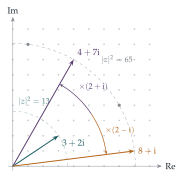

STEP II 2023, Question 7
Read the question before you go on. It is in the STEP II paper in OCR’s download of the 2023 STEP papers (a zip file): www.ocr.org.uk/Images/707102-2023-past-papers.zip
The hook
Which whole numbers can be written as the sum of two squares? \(5 = 1^2 + 2^2\) and \(13 = 2^2 + 3^2\) can, but \(3\), \(7\) and \(21\) can’t. Here is a strange fact: \(65 = 5 \times 13\) can be written as a sum of two squares in two different ways, \(1^2 + 8^2\) and \(4^2 + 7^2\). Why should multiplying two such numbers give another, and why in two ways?
The answer comes from an unexpected direction. The question asks you to leave the whole numbers behind and work with complex numbers. In the complex numbers, sums of two squares become simple, and some baffling-looking arithmetic becomes almost mechanical.
Before you start
If \(z = a + \mathrm{i}b\) with \(a\) and \(b\) integers, what is \(|z|^2\)?
It is \(a^2 + b^2\), a sum of two squares. So “\(N\) is a sum of two squares” means exactly “\(N = |z|^2\) for some complex number \(z\) with integer real and imaginary parts”. Complex numbers like this are called Gaussian integers. Hold on to that translation; the whole question depends on it.
Working it through
Stage 1 Moduli multiply
Write out \(zw\) in terms of \(a\), \(b\), \(c\), \(d\). What do you need to show about \(|zw|^2\)?
We have \(zw = (ac - bd) + \mathrm{i}(ad + bc)\), so \[|zw|^2 = (ac - bd)^2 + (ad + bc)^2 = a^2c^2 + b^2d^2 + a^2d^2 + b^2c^2,\] because the cross terms \(-2abcd\) and \(+2abcd\) cancel. And this factorises: \[a^2c^2 + b^2d^2 + a^2d^2 + b^2c^2 = (a^2 + b^2)(c^2 + d^2) = |z|^2|w|^2.\] Taking square roots, \(|zw| = |z||w|\).■
Now read this as a statement about whole numbers: \[(a^2 + b^2)(c^2 + d^2) = (ac - bd)^2 + (ad + bc)^2. \tag{$\star$}\] The product of two sums of two squares is a sum of two squares, and the complex numbers tell you exactly what the two squares are.
Stage 2 Using it
Part (ii): \(5 = |2 + \mathrm{i}|^2\) and \(221 = 10^2 + 11^2 = |10 + 11\mathrm{i}|^2\). So multiply: \[(2 + \mathrm{i})(10 + 11\mathrm{i}) = 20 + 22\mathrm{i} + 10\mathrm{i} - 11 = 9 + 32\mathrm{i},\] giving \(5 \times 221 = 9^2 + 32^2\). (Check: \(81 + 1024 = 1105\).)
What happens if you multiply \(10 + 11\mathrm{i}\) by \(2 - \mathrm{i}\) instead? It has the same modulus as \(2 + \mathrm{i}\).
\((2 - \mathrm{i})(10 + 11\mathrm{i}) = 20 + 22\mathrm{i} - 10\mathrm{i} + 11 = 31 + 12\mathrm{i}\), so also \(1105 = 31^2 + 12^2\). Choosing \(2 + \mathrm{i}\) or its conjugate gives different representations. That explains the two ways of writing \(65\) in the hook (Figure 1.6.1): \(65 = |(2+\mathrm{i})(3+2\mathrm{i})|^2 = |4 + 7\mathrm{i}|^2\) and \(65 = |(2-\mathrm{i})(3+2\mathrm{i})|^2 = |8 + \mathrm{i}|^2\).

Stage 3 Factorise first
\(8045\) ends in \(5\). What does that suggest?
\(8045 = 5 \times 1609\). We need \(1609\) as a sum of two squares; trying squares just below \(1609\) quickly finds \(1609 = 40^2 + 3^2\). Then \[(2 + \mathrm{i})(40 + 3\mathrm{i}) = 77 + 46\mathrm{i}, \qquad\text{so}\qquad 8045 = 77^2 + 46^2,\] and the conjugate gives \(8045 = 83^2 + 34^2\) as well.
Part (iv) is quicker: \(36 = 6^2 + 0^2\), and multiplying by \(6\) just scales: \(36 \times 50805 = 612^2 + 1206^2\).
Stage 4 Three ways
\(25\) can be written as a sum of two squares in more than one way. How many Gaussian integers have modulus \(5\), up to signs and swapping?
\(25 = 5^2 + 0^2 = 3^2 + 4^2\), corresponding to \(5\), \(3 + 4\mathrm{i}\) and \(3 - 4\mathrm{i}\). Next, \(1002082\): since \(1001^2 = 1002001\), we have \(1002082 = 1001^2 + 9^2\). Multiplying \(1001 + 9\mathrm{i}\) by each of the three gives: \[\begin{aligned} 5\,(1001 + 9\mathrm{i}) &= 5005 + 45\mathrm{i}, \\ (3 + 4\mathrm{i})(1001 + 9\mathrm{i}) &= 2967 + 4031\mathrm{i}, \\ (3 - 4\mathrm{i})(1001 + 9\mathrm{i}) &= 3039 - 3977\mathrm{i}. \end{aligned}\] So the three pairs \((r, s)\) are \((45, 5005)\), \((2967, 4031)\) and \((3039, 3977)\).
Stage 5 Dividing
Part (vi) runs the machine backwards. We know \(109 = 10^2 + 3^2\) and \(1002037 = 1001^2 + 6^2\). How might you find \(9193\) as a sum of two squares, without searching?
If multiplying Gaussian integers multiplies moduli, then dividing should divide them. Try \[\frac{1001 + 6\mathrm{i}}{10 + 3\mathrm{i}} = \frac{(1001 + 6\mathrm{i})(10 - 3\mathrm{i})}{109} = \frac{10028 - 2943\mathrm{i}}{109} = 92 - 27\mathrm{i}.\] It divides exactly, so \(9193 = 92^2 + 27^2\). (Check: \(8464 + 729 = 9193\).)
What happens if you divide by \(10 - 3\mathrm{i}\) instead?
You get \((1001 + 6\mathrm{i})(10 + 3\mathrm{i})/109 = (9992 + 3063\mathrm{i})/109\), which is not a Gaussian integer, since \(9992/109\) isn’t a whole number. Only one of the two “factors of \(109\)” divides \(1001 + 6\mathrm{i}\), just as only some primes divide a given whole number. The Gaussian integers have their own primes and their own factorisations.
Looking back
Translate, solve, translate back. “Sum of two squares” became “modulus squared of a Gaussian integer”. In that language the problem was easy.
Factorise first. Every part began by breaking a big number into smaller ones whose representations were easy to find.
Conjugates give new answers. The number of representations depends on how many ways there are to choose a factor or its conjugate.
What’s really going on
Which primes are sums of two squares? \(2 = 1^2 + 1^2\), \(5\), \(13\), \(17\), \(29\), \(37\), \(41\) are; \(3\), \(7\), \(11\), \(19\), \(23\), \(31\) are not. The pattern: apart from \(2\), a prime is a sum of two squares exactly when it leaves remainder \(1\) on division by \(4\). Fermat stated this in 1640; Euler proved it in 1749. In the language of Gaussian integers it says: a prime \(p \equiv 1 \pmod 4\) splits as \(p = (a + b\mathrm{i})(a - b\mathrm{i})\), while a prime \(p \equiv 3 \pmod 4\) stays prime. For example, \(5 = (2 + \mathrm{i})(2 - \mathrm{i})\), but \(3\) cannot be factorised at all.
In 1990 Don Zagier published a proof of the two-squares theorem that is famously one sentence long. It appears, with explanation, in Proofs from THE BOOK.
A new number system with its own primes
Gauss realised that the Gaussian integers behave remarkably like the ordinary integers. There is a division algorithm and a Euclidean algorithm, and every Gaussian integer factorises uniquely into Gaussian primes (up to multiplying by \(\pm1\) or \(\pm\mathrm{i}\)). Combined with \((\star)\), this lets you count exactly how many ways a number can be written as a sum of two squares, just from its prime factorisation.
At university this is the gateway to algebraic number theory: studying number systems such as \(\mathbb{Z}[\mathrm{i}]\) or \(\mathbb{Z}[\sqrt{-5}]\) in order to understand ordinary whole numbers. Section 1.7 shows why the subject needed to be invented: not every such system is as well behaved as the Gaussian integers.
Four squares and beyond
Every positive integer is a sum of four squares (Lagrange, 1770). The proof relies on a four-square version of \((\star)\), which comes from Hamilton’s quaternions in the same way that \((\star)\) comes from complex numbers. You will see it in Section 7.8.
The thinking skill
A problem that is awkward in one number system may be natural in a larger one.
Sums of two squares are awkward in the integers but simply moduli in the complex numbers. Mathematicians constantly enlarge number systems in this way: integers to rationals, rationals to reals, reals to complex numbers. Each enlargement makes some old problems easy.
Try this next
An obstruction. Show that no number of the form \(4k + 3\) is a sum of two squares. (What are the squares modulo \(4\)?)
Two ways. Write \(65\) and \(85\) each as a sum of two squares in two different ways, and explain your answers using Gaussian integers.
Four ways. \(1105 = 5 \times 13 \times 17\). Find four different ways to write \(1105\) as a sum of two positive squares. Why four?
Gaussian primes. harder Show that if \(3 = (a + b\mathrm{i})(c + d\mathrm{i})\) with \(a, b, c, d\) integers, then one of the factors has modulus \(1\). (Take moduli squared.) This shows that \(3\) is a Gaussian prime.
Further reading
John Stillwell, Elements of Number Theory (Springer). Builds up to Gaussian integers and beyond, with history.
Aigner & Ziegler, Proofs from THE BOOK, Chapter 4, “Representing numbers as sums of two squares”.
Joseph Silverman, A Friendly Introduction to Number Theory, chapters on sums of squares and Gaussian integers.